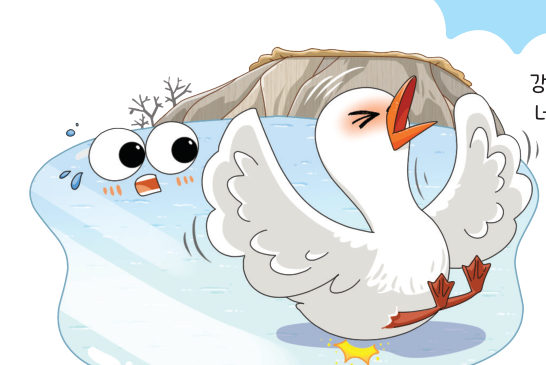
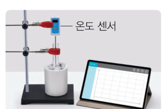
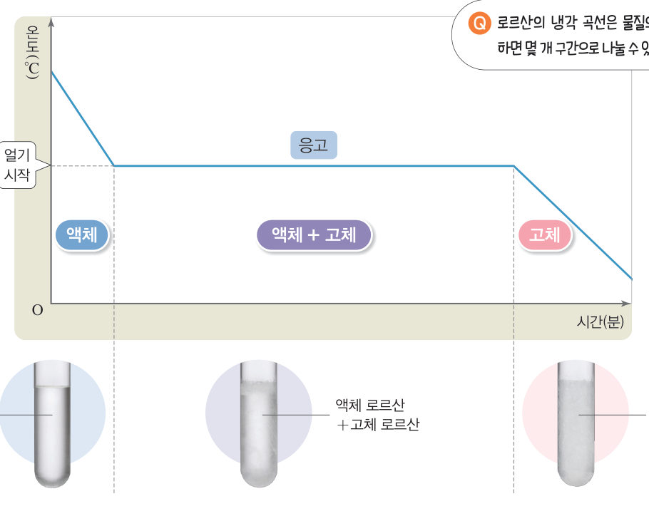
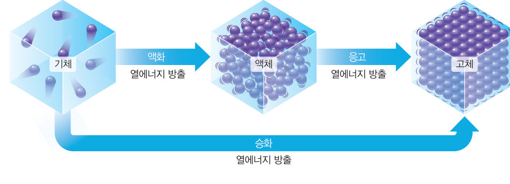
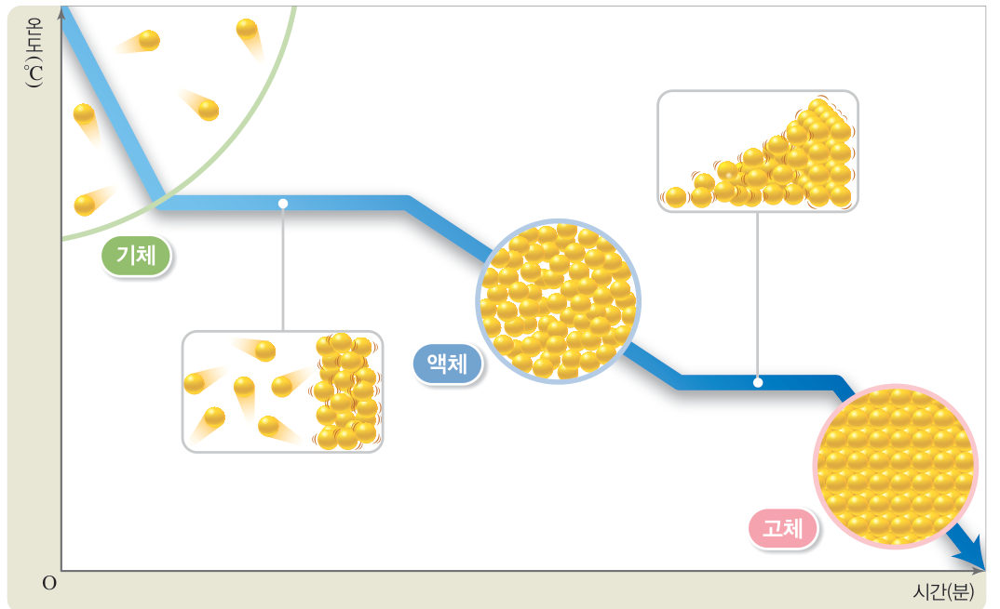

살아있는 교과서 · Ⅳ. 물질의 상태 변화 · 3. 상태 변화와 열에너지 · 01 135~139쪽
물질을 냉각할 때의
물질을 냉각할 때의
온도 변화
“강물이 얼어서 너무 차가워.” 강물이 얼 때 물의 온도는 계속 낮아질까? 가상 시험관으로 액체 로르산을 냉각하며 30초마다 온도를 측정하고, 냉각 곡선을 그려 보자.
🎯 이 단원을 배우면 — 물질을 냉각할 때의 온도 변화를 측정하여 냉각 곡선을 그리고, 상태가 변할 때 입자 배열의 변화를 열에너지와 관련지어 설명할 수 있다.
중단원 열기세 번째 블록 질문 135쪽
두 항아리 사이에 넣어 둔 흙이 마르면 물을 뿌려 흙을 다시 젖게 해야 해.
세 번째 블록
흙에 물을 뿌려 젖은 상태를 유지하는 까닭은 무엇일까?
‘물질을 냉각할 때의 온도 변화’(136쪽), ‘물질을 가열할 때의 온도 변화’(140쪽), ‘상태 변화 시 열에너지 출입 이용’(144쪽)의 블록을 모아요. 🧩
✓이미 알고 있는 것 — 물질의 상태가 변해도 물질의 은 변하지 않고, 물질을 구성하는 입자의 이 달라진다.
탐구상태 변화 실험에서 냉각 곡선 그리기 136~137쪽
물질을 냉각할 때 온도는 어떻게 변할까?


- 시험관에 로르산을 1/3 정도 넣는다.
- 시험관을 뜨거운 물이 담긴 비커에 넣어 스탠드와 집게로 고정한 뒤, 로르산이 모두 녹을 때까지 기다린다.
- 로르산이 모두 녹으면 비커에서 시험관을 꺼낸 뒤, 온도계의 끝이 액체 로르산에 잠기도록 온도계를 시험관에 넣어 고정한다.
- 측정 30초 간격으로 로르산의 온도를 측정하고 시험관 속 로르산의 상태를 관찰하여 표에 기록한다.
⚠️ 유리 기구를 다룰 때 깨지지 않게 조심한다. 뜨거운 물을 사용할 때 화상을 입지 않도록 주의한다. 환기가 되도록 한다. 실험을 마치면 남은 물질은 지정한 곳에 모아 처리한다.
가상 실험가상 시험관과 온도계
물질을 고르고 [냉각 시작]을 누르면 30초마다 온도와 상태가 표에 기록돼요. 시험관 속 모습과 입자 확대 창을 함께 보자. 물을 고르면 ‘다르게 해 보기’처럼 얼음과 소금(3:1)을 섞은 컵에 넣어 냉각해요.
시간0:00
온도-
상태-
정리해 볼까
1자료 변환·해석 온도가 일정한 구간에서 로르산의 상태는 이고, 이때의 온도는 약 ℃이다.
2로르산의 양을 늘리면 온도가 일정하게 유지되는 시간은 , 그때의 온도는 .
3로르산의 상태가 변하는 동안 온도가 일정하게 유지되는 까닭을 열에너지 출입과 관련지어 이야기해 보자.
다르게 해 보기 · 디지털 탐구 도구를 활용하여 물의 냉각 곡선 그리기

① 잘게 부순 얼음과 소금을 3:1의 비율로 섞어 스타이로폼 컵에 넣는다. ② 시험관에 물을 1/3 정도 넣고, 컵 속 얼음에 시험관을 넣는다. ③ 온도 센서를 시험관에 설치한 뒤 온도 변화를 측정한다.
👉 위 가상 실험에서 물을 고르면 해 볼 수 있어요. 실제 센서 실험은 ‘아두이노 실험 ①’에서!
👉 위 가상 실험에서 물을 고르면 해 볼 수 있어요. 실제 센서 실험은 ‘아두이노 실험 ①’에서!
물이 어는 동안 온도는 약 ℃로 일정하게 유지된다.
교과서냉각 곡선과 열에너지 방출 138쪽
액체 로르산을 냉각하면 그림 4-8과 같이 로르산의 온도가 서서히 낮아진다. 그런데 로르산의 상태가 변하기 시작하면 온도가 더 이상 낮아지지 않고 일정하게 유지된다. 이는 액체에서 고체로 상태가 변하면서 ●열에너지를 방출하기 때문이다.
●열에너지: 물체의 온도를 높이거나 물질의 상태를 변하게 하는 원인이 되는 에너지의 한 형태이다.

1로르산의 냉각 곡선은 물질의 상태를 기준으로 하면 개 구간으로 나눌 수 있다.
물질을 냉각하면 입자 운동이 점점 둔해지고 입자 사이의 거리가 점점 가까워진다. 응고하는 동안에는 입자 배열이 규칙적으로 변하며 열에너지를 방출하므로 온도가 변하지 않고 일정하게 유지된다. 액화나 기체에서 고체로의 승화가 일어날 때에도 그림 4-9와 같이 이러한 입자 배열의 변화가 일어나며 열에너지를 방출한다.

해 보기물질을 냉각하여 상태가 변할 때 입자 배열의 변화 알아보기 139쪽

▶ 움직이는 그림 — 시간 막대를 움직여 기체가 냉각되어 액체, 고체가 되는 동안 입자 모형과 열에너지 출입을 확인해 보자.
1물질을 냉각하여 상태가 변할 때 입자의 운동성은 , 배열은 변하며, 입자 사이의 거리는 . 이때 열에너지를 한다.
스스로 확인하기136쪽 학습 목표를 달성했는지 확인해 보자 139쪽
1개념 확인 액체를 냉각하여 고체로 상태가 변하는 동안 온도는 ( ).
2사고력 액체 금속을 냉각하여 제품을 만들 때 사용하는 틀은 만들려는 제품보다 약간 커야 한다. 그 까닭을 액체 금속이 응고할 때 입자 배열의 변화와 열에너지 출입을 관련지어 설명해 보자.
🧩 세 번째 블록 · 힌트 조각 1 (139쪽)
흙에 뿌린 물의 상태가 변할 때 ( )이/가 출입한다.
5분 테스트물질을 냉각할 때의 온도 변화
1액체 로르산을 냉각하면 온도가 서서히 . 로르산이 얼기 시작하면 온도가 유지된다. 로르산이 액체에서 고체로 변하면서 열에너지를 한다.
2옳은 것은 O, 옳지 않은 것은 X를 골라 보자.
| ④ 로르산이 어는 동안 입자의 운동이 활발해진다. | |
| ⑤ 로르산이 응고되는 구간에서는 상태 변화가 일어나므로 액체와 고체가 함께 존재한다. | |
| ⑥ 액화가 일어날 때에는 열에너지를 흡수한다. |
3그래프는 물을 냉각할 때 시간에 따른 온도 변화를 나타낸 것이다.
| ⑦ A 구간에서 입자 배열이 불규칙적으로 변한다. | |
| ⑧ B 구간에서는 열에너지를 방출한다. | |
| ⑨ C 구간에서는 액체에서 고체로 상태가 변한다. | |
| ⑩ 물이 얼기 시작하는 온도는 0 ℃이다. |
스스로 정리하기물질을 냉각할 때의 온도 변화 148쪽
1물질을 냉각할 때의 온도 변화
(1) 물질의 상태가 변하는 동안에는 온도가 변하지 않고 유지된다.
(2) 열에너지를 하는 상태 변화: 응고, 액화, 기체에서 고체로의 승화
(2) 열에너지를 하는 상태 변화: 응고, 액화, 기체에서 고체로의 승화
제출학생 정보 · 제출하기
모든 활동을 마친 뒤 제출하면 전체가 한 번에 채점되고 피드백이 나타나요. 답안은 선생님 스프레드시트(중1 탭)에 기록돼요.